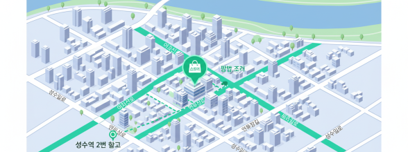
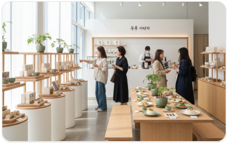

운영기간
2026.08.10 ~
2026.09.10
Popup Store
풀무원 바른먹거리 체험 공간
풀무원의 바른먹거리 철학을 직접 보고, 맛보고, 경험할 수 있는 특별한 팝업스토어입니다. 두부·녹즙·식물성 지향 식품을 체험하고 건강한 라이프스타일을 만나보세요.

풀무원은 시대의 식생활 트렌드를 반영한 체험형 공간을 운영합니다. 새로운 메뉴와 제품, 사람과 식탁을 잇는 프로그램을 만나보세요.

풀무원 팝업스토어의 운영 일정과 프로그램 시간표를 확인하세요.
2026.08.10 ~
2026.09.10
서울 성수동
풀무원 로하스 라운지
매일 10:00 ~ 20:00
(월요일 휴무)
두부 만들기 /
비건 쿠킹클래스
풀무원 팝업스토어 방문 전 확인해 주세요. 주차 및 대중교통 안내를 제공합니다.

풀무원 바른먹거리 체험관

성수역 2번 출구 도보 5분
풀무원이 그동안 운영한 팝업스토어를 돌아봅니다. 바른먹거리 페스타, 두부 팝업 등 특별한 순간들을 확인하세요.

